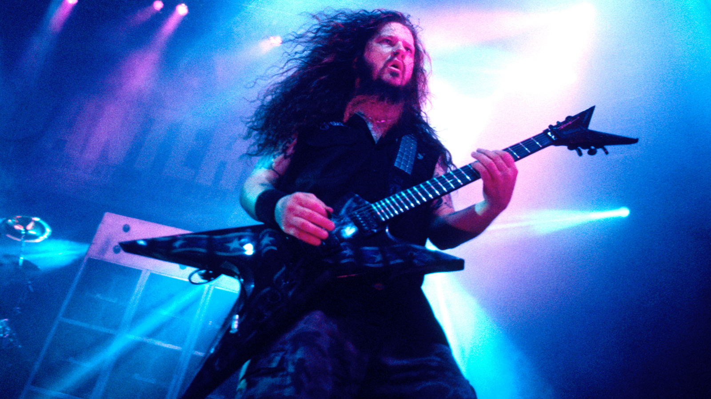
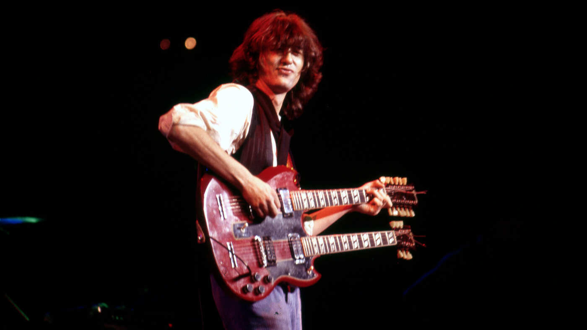
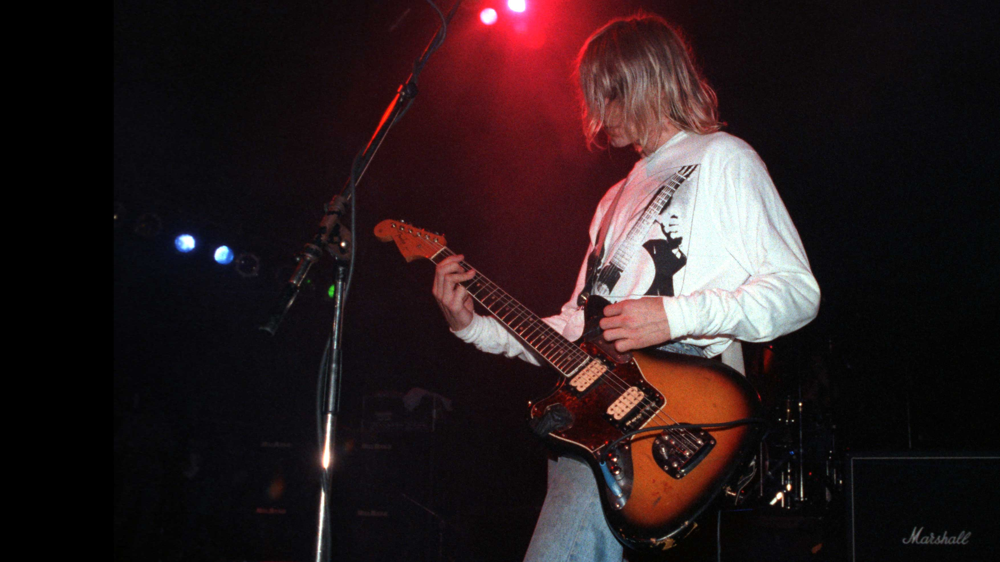

Eddie Van Halen met zijn Frankenstrat gitaar (foto uit rondom 1986)

Dimebag Darrell met zijn ML gitaar (foto uit rondom 2000).

Jimmy Page met zijn dubbel nek gitaar (foto uit de jaren 70).

Kurt Cobain met zijn Fender Jag Stang gitaar (foto uit rondom 1991).
